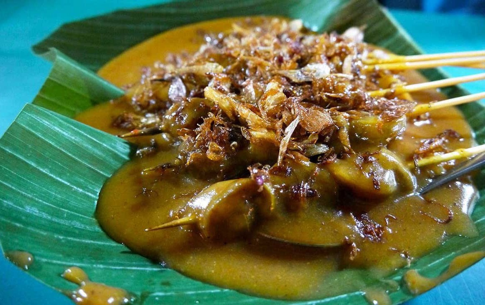

Kalau ditanya resep makanan favorit pasti banyak dong ya. Tapi salah satunya ya ini nih, Sate Padang. Kalo ditanya alasannya, waduh..rasanya itu loh, baru denger judulnya aja udah bikin nelen ludah 😆 bikinnya juga gak ribet, dan pastinya puas daripada beli dengan harga yang lumayan mahal. Dulu waktu di Medan sering banget Ajo si tukang sate lewat depan rumah. Semenjak merantau dan kenal cookpad, apa2 kudu bikin sendiri. Mulai dari coba2 masak sampai ketagihan masak. Yuk, cobain yuk..gampang banget..
Bahan Bahan
- 250 gr fillet daging ayam
- 1 bh jeruk nipis
- 1 ruas jahe (geprek)
- 1 ruas lengkuas (geprek)
- 1 lbr sereh (ambil putihnya, geprek)
- 1 lbr daun kunyit (sobek2)
- 3 lbr daun jeruk
- 3 butir kapulaga
- 3 butir cengkeh
- 1 butir bunga lawang
- 3 sdm tepung beras (larutkan dgn 50ml air)
- Secukupnya garam, gula dan lada bubuk
- 600 ml air
Bumbu Halus :
- 8 siung bawang merah
- 4 siung bawang putih
- 3 cm kunyit
- 1/2 sdt jintan
- 1/2 sdt ketumbar
- 4 bh cabe merah (sesuai selera)
- 3 bh cabe rawit
Pelengkap :
- lontong dan bawang goreng
Langkah Lagnkah
- Cuci bersih ayam, potong2 dadu seperti potongan sate. Lalu lumuri dgn perasan jeruk nipis. Diamkan 10menit.
- Tumis bumbu halus, tambahkan bunga lawang, kapulaga, sereh, jahe, lengkuas, daun kunyit, daun jeruk. Lalu masukkan ayam. Masak sebentar sampai bumbu meresap. Tambahkan air. Beri garam, gula dan lada. Masak sampai ayam sedikit lunak.
- Keluarkan ayamnya. Sisihkan di piring. Tusuk dgn tusukan sate. Lalu panggang di pan/teflon sampai matang. Saring sisa kuah memasak ayam tadi. Lalu tambahkan air larutan tepung beras. Masak sampai mengental. Tes rasa.
- Daging ayamnya empuk dan wangi rempah ya 😍
- Sajikan dengan lontong dan taburan bawang goreng.. Hmm..harumnya masyaallah 😍
- Selamat mencoba